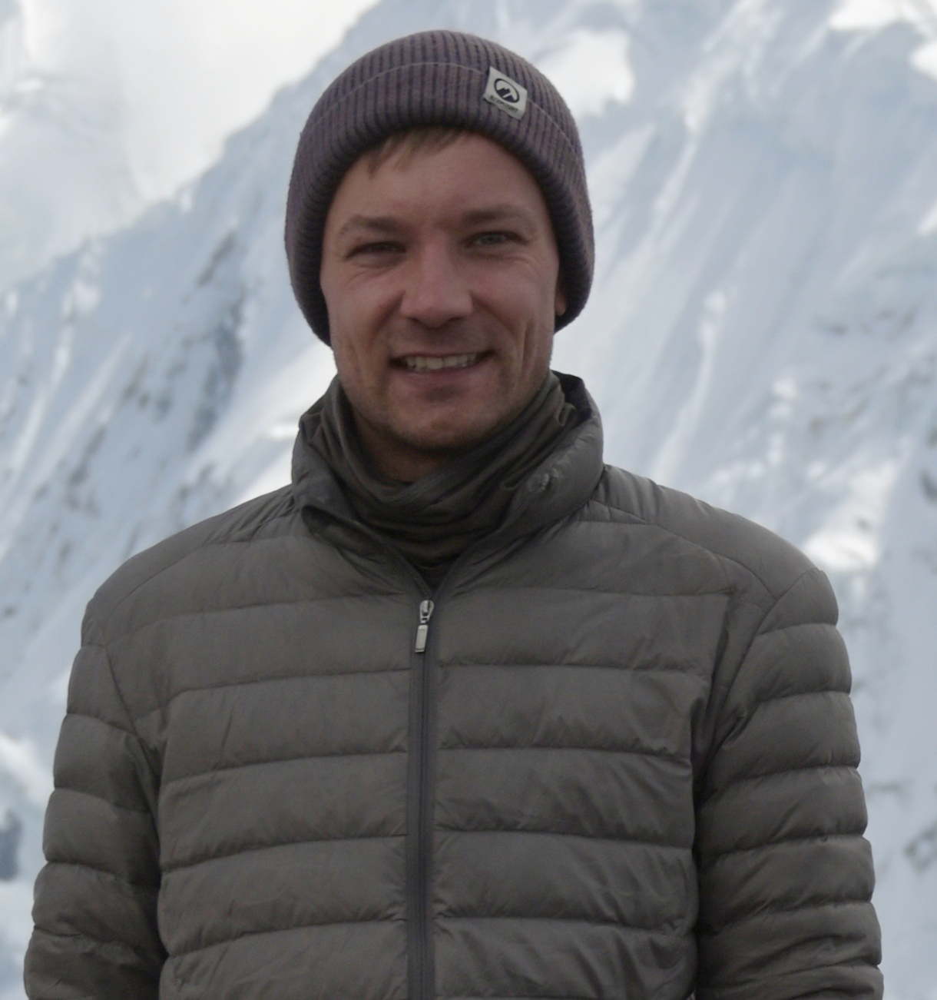

Peter NicklSince September 2024, I have been a PhD researcher in computational neuroscience and machine learning, supervised by Alexandre Pouget at the University of Geneva. My research focuses on how biological and artificial agents make sequential decisions under uncertainty. I am interested in uncertainty representation in neural and deep learning systems, the composition of complex behaviors from simple building blocks, adaptive planning and trial-and-error learning. Specifically, I ask:
peter.nickl (at) unige (dot) ch Past ExperienceFrom 2020 to 2024, I was with the Adaptive Bayesian Intelligence Team (formerly: Approximate Bayesian Inference Team) at RIKEN Center for AI Project in Tokyo, initially as an intern and subsequently as a predoctoral research assistant, advised by Emtiyaz Khan and Thomas Moellenhoff. My research focused on the sensitivity of machine learning models to data perturbations and probabilistic deep learning methods. In 2021, I was part of the winning team of the NeurIPS challenge on Approximate Inference in Bayesian Deep Learning. In 2022, I helped organize the Continual Lifelong Learning Workshop at ACML. I have reviewed for NeurIPS, AISTATS and RA-L. I studied computational engineering, mechanical engineering and economics at TU Darmstadt. In 2019, I did my thesis research at the Intelligent Autonomous Systems Lab, advised by Hany Abdulsamad and Jan Peters. I developed approximate inference algorithms for an infinite mixture of local linear regression models with applications to robot control. At the same lab, I was a member of the spin-off team Telekinesis AI. We acquired an EIC transition grant on «Visual Robot Programming». During my studies, I spent two years in China as a Mandarin language and exchange student at Beijing Institute of Technology and Tongji University. I interned at Bosch Rexroth and Continental Automotive Systems in Shanghai. |
 |
News |
Publications |

|
Resource-rational Adaptive Planning under UncertaintyPeter Nickl, Pablo Tano, Alexandre Pouget Computational and Systems Neuroscience (COSYNE), 2026 We propose a normative meta-planning framework for adaptive allocation of planning resources under uncertainty and resource constraints. AbstractPlanning in stochastic environments is a fundamental challenge for model-based reinforcement learning, particularly with imperfect world models and limited data. We introduce a meta-planner that adaptively decides when and how far ahead to plan using uncertainty estimates. At each planning step, the meta-planner receives world-model predictive uncertainty as features, decomposed into aleatoric (inherent stochasticity) and epistemic (model uncertainty) components, and evaluates candidate planning configurations. It selects a planning horizon H (how far?) and planning interval F (when?; number of executed actions before replanning) by predicting returns for each configuration via supervised learning. The meta-planner accounts for the cost of mental simulation, proportional to H/F , which enables trade-offs between performance and resource use. Using the selected planning parameters, a low-level planner optimizes action sequences via probabilistic world-model rollouts over horizon H and executes the first F actions before querying the meta-planner again. In a navigation task inspired by a rodent-escape paradigm, our approach matches the performance of the best fixed configuration at substantially lower planning cost. This meta-planning framework offers a normative perspective on how biological agents might adaptively allocate planning resources under uncertainty and resource constraints. |

|
Variational Learning is Effective for Large Deep NetworksYuesong Shen*, Nico Daheim*, Bai Cong, Peter Nickl, Gian Maria Marconi, Clement Bazan, Rio Yokota, Iryna Gurevych, Daniel Cremers, Emtiyaz Khan, Thomas Möllenhoff International Conference on Machine Learning (ICML), 2024 arXiv / code / blog / We show that variational learning is effective for large deep networks such as GPT-2. We demonstrate the benefits of variational learning in downstream tasks like OOD detection, merging of large models and understanding the sensitivity of models to the training data. AbstractWe give extensive empirical evidence against the common belief that variational learning is ineffective for large neural networks. We show that an optimizer called Improved Variational Online Newton (IVON) consistently matches or outperforms Adam for training large networks such as GPT-2 and ResNets from scratch. IVON's computational costs are nearly identical to Adam but its predictive uncertainty is better. We show several new use cases of IVON where we improve fine-tuning and model merging in Large Language Models, accurately predict generalization error, and faithfully estimate sensitivity to data. We find overwhelming evidence in support of effectiveness of variational learning. |

|
The Memory-Perturbation Equation: Understanding Model's Sensitivity to DataPeter Nickl, Lu Xu*, Dharmesh Tailor*, Thomas Möllenhoff, Emtiyaz Khan 37th Conference on Neural Information Processing Systems (NeurIPS), 2023 ICML Workshop on Duality Principles for Modern Machine Learning, 2023 paper / arXiv / video / code / poster / Using Bayesian principles, we derive a general framework to understand the sensitivity of machine learning models to data perturbation during training. We apply the framework to predict generalization on unseen test data. AbstractUnderstanding model’s sensitivity to its training data is crucial but can also be challenging and costly, especially during training. To simplify such issues, we present the Memory-Perturbation Equation (MPE) which relates model's sensitivity to perturbation in its training data. Derived using Bayesian principles, the MPE unifies existing sensitivity measures, generalizes them to a wide-variety of models and algorithms, and unravels useful properties regarding sensitivities. Our empirical results show that sensitivity estimates obtained during training can be used to faithfully predict generalization on unseen test data. The proposed equation is expected to be useful for future research on robust and adaptive learning. |

|
Variational Hierarchical Mixtures for Probabilistic Learning of Inverse DynamicsHany Abdulsamad, Peter Nickl, Pascal Klink, and Jan Peters IEEE Transactions on Pattern Analysis and Machine Intelligence (PAMI), 2023 paper / arXiv / We propose an efficient variational inference algorithm and a hierarchical extension to an infinite mixture of local linear regression units with applications to robot control. The hierarchical extension allows for weight-sharing and improved model compression. AbstractWell-calibrated probabilistic regression models are a crucial learning component in robotics applications as datasets grow rapidly and tasks become more complex. Unfortunately, classical regression models are usually either probabilistic kernel machines with a flexible structure that does not scale gracefully with data or deterministic and vastly scalable automata, albeit with a restrictive parametric form and poor regularization. In this paper, we consider a probabilistic hierarchical modeling paradigm that combines the benefits of both worlds to deliver computationally efficient representations with inherent complexity regularization. The presented approaches are probabilistic interpretations of local regression techniques that approximate nonlinear functions through a set of local linear or polynomial units. Importantly, we rely on principles from Bayesian nonparametrics to formulate flexible models that adapt their complexity to the data and can potentially encompass an infinite number of components. We derive two efficient variational inference techniques to learn these representations and highlight the advantages of hierarchical infinite local regression models, such as dealing with non-smooth functions, mitigating catastrophic forgetting, and enabling parameter sharing and fast predictions. Finally, we validate this approach on large inverse dynamics datasets and test the learned models in real-world control scenarios. |

|
A Variational Infinite Mixture for Probabilistic Inverse Dynamics LearningHany Abdulsamad, Peter Nickl, Pascal Klink, and Jan Peters IEEE International Conference on Robotics and Automation (ICRA), 2021 paper / arXiv / video / code / slides / We devise an efficient variational inference algorithm for an infinite mixture of local linear regression units with data-driven complexity adaptation and apply the method to robot control. AbstractProbabilistic regression techniques in control and robotics applications have to fulfill different criteria of data-driven adaptability, computational efficiency, scalability to high dimensions, and the capacity to deal with different modalities in the data. Classical regressors usually fulfill only a subset of these properties. In this work, we extend seminal work on Bayesian nonparametric mixtures and derive an efficient variational Bayes inference technique for infinite mixtures of probabilistic local polynomial models with well-calibrated certainty quantification. We highlight the model’s power in combining data-driven complexity adaptation, fast prediction, and the ability to deal with discontinuous functions and heteroscedastic noise. We benchmark this technique on a range of large real-world inverse dynamics datasets, showing that the infinite mixture formulation is competitive with classical Local Learning methods and regularizes model complexity by adapting the number of components based on data and without relying on heuristics. Moreover, to showcase the practicality of the approach, we use the learned models for online inverse dynamics control of a Barrett-WAM manipulator, significantly improving the trajectory tracking performance. |
Theses |

|
Bayesian Inference for Regression Models using Nonparametric Infinite MixturesPeter Nickl M.Sc. Thesis, Intelligent Autonomous Systems Lab, Department of Computer Science, Technical University of Darmstadt, Germany link / We derive and implement approximate inference algorithms for an infinite mixture of local linear regression units with data-driven complexity adaptation. AbstractWe derive and implement approximate inference algorithms for regression. The considered regression method is a probabilistic infinite mixture of local linear regression models that is generative in both inputs and outputs. Complexity is regularized without relying on heuristics. Local regression models are added and pruned automatically, based on the stick-breaking representation of the Dirichlet process prior. The choice of model is taken with applications to robotic control in mind. Those benefit from fast online learning and prediction, data-driven complexity adaptation, modeling of discontinuities, input-dependent noise modeling, and well-calibrated uncertainty quantification. Similar local curve fitting methods rely on computationally expensive Markov chain Monte Carlo schemes. We derive and implement a Gibbs sampling baseline and an efficient variational inference algorithm. We conduct an experimental study on illustrative small-scale and real-world robotic datasets to validate the method and to ablate hyperparameters. The outcome is a software library of inference algorithms for mixture models. |

|
Integrated Truck and Manpower Scheduling in Cross-docks – Design and Analysis of a Heuristic AlgorithmPeter Nickl Research thesis, BOSCH-Chair of Global Supply Chain Management, Sino-German College for Postgraduate Studies, Tongji University, China link / We design and implement a heuristic algorithm in C++ for solving a mixed-integer linear program targeted at scheduling problems in logistics. AbstractWe design and implement a heuristic algorithm for solving a mixed-integer linear program (MILP) for a scheduling problem in logistics. Cross-docking warehouses distribute goods from suppliers to customers with a storage time of only a few hours. Due to the permanent flow of incoming and outgoing trucks, it is very difficult for managers to schedule the trucks to available gates and to allocate the staff without overlapping assignments or long idle times. Exact methods like branch and bound are computationally restrictive when solving large MILP. In this project we (1) conduct a literature survey on metaheuristics, (2) design a heuristic algorithm to solve the problem efficiently, (3) prototype the algorithm in MATLAB, (4) create an efficient implementation in C++ and (5) evaluate the performance and run-time of the algorithm on test cases. The heuristic algorithm consists of the following elements. (1) A representation for encoding feasible solutions, (2) a fitness function for evaluating solutions, (3) construction of initial solutions, and (4) local search operators to find good solutions in the neighborhood of feasible solutions. The outcome is a heuristic algorithm tailored to the problem and an efficient C++ implementation. |

|
Investigation of Oscillating Bubbles/Drops with Different Flow Solvers and with Various Surface Tension ModelsPeter Nickl B.Sc. Thesis, Numerical Methods in Mechanical Engineering, Department of Mechanical Engineering, Technical University of Darmstadt, Germany link / We survey and implement numerical surface tension models of oscillating bubbles in multiphase flows. AbstractWe conduct numerical simulations of multiphase flows, such as bubbles of gas in a liquid. In the medical domain, for instance, micro-bubbles find application in the targeted allocation of drugs in the human body. The Navier-Stokes partial differential equations describing the Newtonian mechanics of viscous fluids can be solved analytically only in simple cases. This makes numerical solutions indispensable. At a scale of a few micrometers, surface tension is the dominating force that drives the bubble motion. We (1) conduct a literature survey on numerical models for the surface tension of bubbles, (2) implement suitable candidates in multiple numerical flow solvers and (3) conduct experiments to evaluate the most accurate model and flow solver. |
|
Adapted from Leonid Keselman's fork of Jon Barron's website |